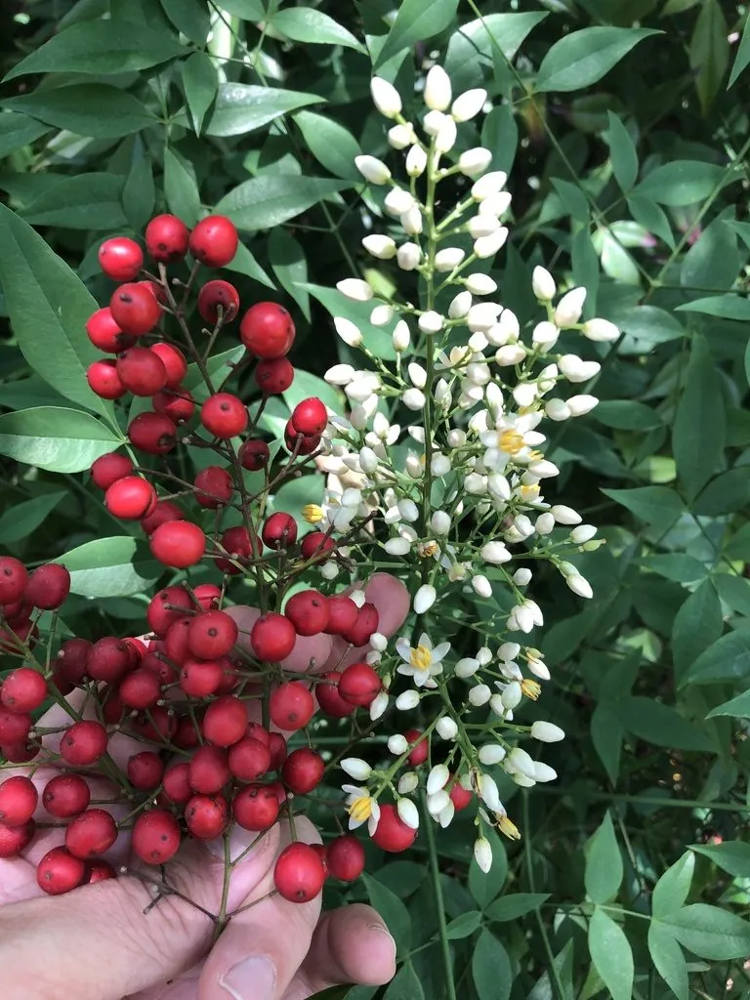

灌木与花木 · 植物界
南天竹 Nandina domestica

枝叶清秀、秋冬结满红果的常绿灌木，叶片入秋转为红色，是传统庭院与盆景中寓意吉祥的观赏植物。
- 分类
- 门被子植物门纲木兰纲目毛茛目科小檗科属南天竹属
- 栖息环境
- 海拔 1000 米以下的山坡林下、溪边与庭院，喜温暖湿润和半阴
- 地理分布
- 原产中国长江流域及日本，江苏、浙江、四川等地常见
- 保护级别
- 暂无评估；中国未列入国家重点保护野生植物名录
物种志
南天竹为常绿灌木，高可达 2 m，茎直立、少分枝，幼枝红色；叶片为二至三回羽状复叶，小叶椭圆状披针形，革质，全缘，入秋后逐渐转为红色。花期 5–7 月，圆锥花序顶生，花小、白色，花瓣 6 枚；浆果球形，直径约 8 mm，成熟时鲜红色，可宿存至翌年春季，内含 2 粒种子。
南天竹原产中国长江流域及日本，喜温暖湿润、半阴环境，较耐寒，适宜疏松肥沃、排水良好的微酸性土壤。因枝干挺拔似竹、红果经冬不落，常被栽植于庭院、假山旁与花境中，也是传统盆景与插花材料，寓意“天竹报福”“红红火火”。根、茎与果实可入药，但全株有毒，果实毒性较强，不可食用；栽培中注意避免儿童误食。
形态与习性
- 株高可达 2 m，茎直立、少分枝
- 花期5–7 月，花小、白色
- 果期9–12 月，浆果鲜红色宿存
- 光照喜半阴，也可耐受散射光
- 水分喜湿润，怕积水
- 土壤微酸性、疏松肥沃的壤土
- 主要用途庭院观赏、盆景与插花、根茎入药
趣味知识
- 南天竹的叶片入秋转红，红果经冬不落，是传统庭院中“岁寒”景观的组成。
- 南天竹名字带“竹”，但它并不属于竹类，而是小檗科植物。
- 南天竹全株有毒，果实毒性较强，不可食用，需防止儿童误食。
- 南天竹是传统盆景与插花材料，红果寓意吉祥，春节时常用于装饰。